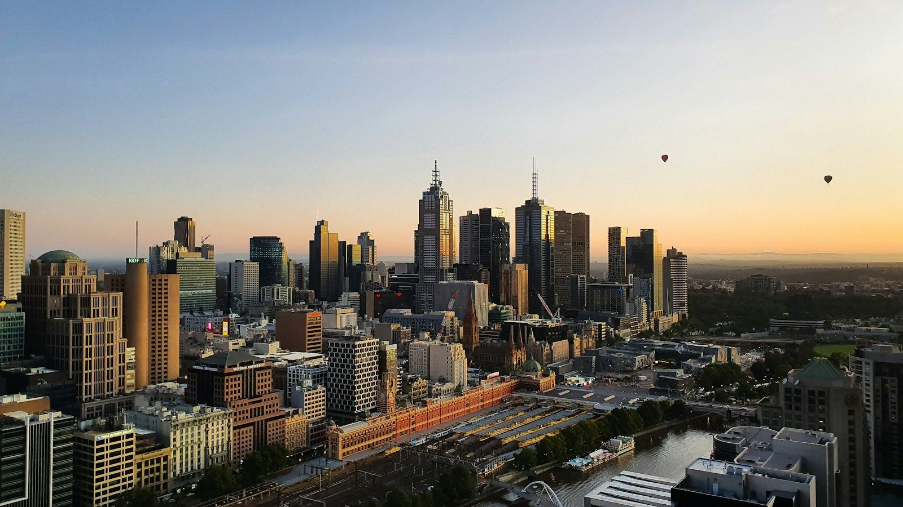

Track record
Built in Australia, by the teams that now build for QORINAI.
QORINAI is a new company with an experienced bench. Its delivery partners and engineering leads have designed, built and operated high-density compute across New South Wales and Victoria since 2008. The projects below are theirs; the capabilities are now ours. Counterparties and site details are available under NDA.
Capability timeline
From inner-city colocation to liquid-cooled GPU clusters.
- 2008
Inner-city colocation opens
100 racks, N+1, dark-fibre ring — still operating.
- 2014
Open-OEM manufacturing
Our strategic shareholder begins building servers in Canberra.
- 2021–22
Modular site beside a power station
8 × 2.5 MW modules, 1.9 → 20 MW staged in five months.
- 2022
~14 MW high-density build
Largest single build in the portfolio; direct utility coordination.
- 2025–26
1 MW liquid-cooled GPU cluster
Owner-funded, no master EPC, PUE < 1.10 pod design.
- 2026
QORINAI
Full-chain AI data centres: power first, halls, hardware, operations and the IntraLLM platform.
Partner-delivered projects
Four projects, four links of the chain.
Each project covers a different capability — grid connection, modular speed, continuous operations, liquid-cooled owner-managed delivery — and the same people carry across all four.
~14 MW high-density facility, Greater Sydney
Delivered by a QORINAI delivery partner · largest single build in the partner's portfolio
A purpose-built high-density compute facility in Greater Sydney's north-west, energised through direct coordination with the distribution network operator in one of the most connection-constrained regions in Australia. Custom high-airflow cooling, per-customer VLAN isolation and layered physical security — facial recognition, thermal imaging, MAC-registered fibre access.
- CapabilityGrid connection execution at > 10 MW in a constrained network; high-density electrical distribution
- CoolingCustom > 1,000,000 CFM system, 4–12 °C hall temperature with fan-failure headroom
- SecurityFacial recognition + thermal imaging; hosted fibre with MAC registration; per-tenant VLAN and remote management
- Operations24 h customer access with resident engineers
~11 MW modular site beside a renewable power station, Northern NSW
Delivered by a QORINAI delivery partner for a listed asset owner · behind-the-meter, 100 % renewable
Eight transportable 2.5 MW modular data centres installed on land adjoining a 30 MW biomass power station, supplied behind the meter under a seven-year take-or-pay electricity agreement. The first module was energised three days after signing; the staged plan reached the 20 MW maximum transfer capacity in five months, with ~11 MW built and energised by the team. The modules were later relocated overseas and continue to operate — proof that the design is genuinely redeployable.
- CapabilityRapid regional site development; modular delivery; owner-built connection infrastructure
- EnergyBehind-the-meter supply from a certified-renewable generator; load able to flex against midday solar surplus
- CommercialTake-or-pay structure, minimum-load thresholds, liquidated damages — the same shape as a GPU hosting contract
- LineageThe module design principles carry directly into today's 2.5 MW pod product
Inner-city colocation facility, Sydney
Operated by a QORINAI delivery partner since 2008 · commercial colocation, connectivity and infrastructure
A 100-rack colocation facility one train stop from the Sydney CBD, opened in 2008 and still operating: N+1 power and air-conditioning, a redundant dark-fibre ring to every major Sydney data centre and peering point, private cages, business suites and remote hands under ISO 27001 controls.
- CapabilityMulti-tenant operations in a constrained inner-city building; long-run reliability, not one-off construction
- ConnectivityRedundant dark-fibre ring; direct connection to any cloud, transit or IaaS provider in the metro
- ComplianceISO 27001 operations; Australian-owned, Australian-staffed
1 MW liquid-cooled GPU cluster, Sydney north shore
Delivered by a QORINAI delivery partner on its own balance sheet · no master EPC
A 1 MW high-density GPU cluster in an owner-occupied industrial building, delivered by directly engaging electrical, mechanical / liquid-cooling, cabling and compliance subcontractors — no master EPC, no interface margin. The build fed the partner's modular pod product line: sealed high-security pods with heat, EMF and noise capture, tested below 1.10 PUE, and a patent-pending waste-heat reuse system.
- CapabilityOwner-managed subcontracting; direct-to-chip liquid cooling at > 100 kW per rack
- NetworkSecond NSW distribution network connected to — the team has worked with both metropolitan operators
- ProductModular pod, DCIM / remote monitoring stack, waste-heat reuse — the engineering basis for QORINAI's Tier C halls
Want references, not renders?
We'll walk you through the projects above with the engineers who delivered them.